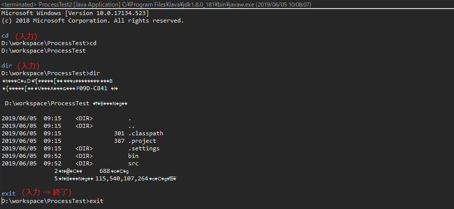

[Java] cmdコマンドを実行するための方法
こんにちは。明月です。
この投稿はJava環境でcmdコマンドを実行するための方法に関する説明です。
プログラムを作成する時にウェブアプリケーションや一般アプリケーションでほかのプログラムを実行するとか内部サーバをコントロールする時にあります。
例えば、jankinsの場合、ウェブ環境でgitやsvnのコマンドを操作するとかシェルコマンドでウェブ環境でサーバをコントロールするようなプログラムです。
このようにプログラムを通ってシェルコマンドを使う場合がありますが、その時に使うことができるソースコードです。
import java.io.BufferedReader;
import java.io.BufferedWriter;
import java.io.IOException;
import java.io.InputStream;
import java.io.InputStreamReader;
import java.io.OutputStream;
import java.io.OutputStreamWriter;
import java.util.Scanner;
import java.util.concurrent.Executors;
public class ProcessTest2 {
public static void main(String[] args) {
try {
// Linuxの場合は/bin/bash
// Process process = Runtime.getRuntime().exec("/bin/bash");
Process process = Runtime.getRuntime().exec("cmd");
// Processの各ストリームを受け取る。
// processの入力ストリーム
OutputStream stdin = process.getOutputStream();
// processのエラーストリーム
InputStream stderr = process.getErrorStream();
// processの出力ストリーム
InputStream stdout = process.getInputStream();
// スレッドプールを利用して三つのストリームを待ちさせる。
// 出力ストリームをBufferedReaderで受け取ってライン変更がある場合、console画面に出力する。
Executors.newCachedThreadPool().execute(() -> {
// 文字化けが発生する時、InputStreamReader(stdout)にエンコーディングタイプを入れる。ex) InputStreamReader(stdout, "shift_jis")
// try (BufferedReader reader = new BufferedReader(new InputStreamReader(stdout, "shift_jis"))) {
try (BufferedReader reader = new BufferedReader(new InputStreamReader(stdout))) {
String line;
// ライン変更(\r\n)たびに、lineにデータが格納される。
while ((line = reader.readLine()) != null) {
// コンソール出力
System.out.println(line);
}
} catch (IOException e) {
// TODO Auto-generated catch block
e.printStackTrace();
}
});
// エラーストリームをBufferedReaderに受け取ってエラー発生する場合、console画面に出力する。
Executors.newCachedThreadPool().execute(() -> {
// 文字化けが発生する時、InputStreamReader(stdout)にエンコーディングタイプを入れる。ex) InputStreamReader(stdout, "shift_jis")
// try (BufferedReader reader = new BufferedReader(new InputStreamReader(stderr, "shift_jis"))) {
try (BufferedReader reader = new BufferedReader(new InputStreamReader(stderr))) {
String line;
// ライン変更(\r\n)たびに、lineにデータが格納される。
while ((line = reader.readLine()) != null) {
// コンソール出力
System.out.println("err " + line);
}
} catch (IOException e) {
// TODO Auto-generated catch block
e.printStackTrace();
}
});
// 入力ストリームをBufferedWriterで受け取ってコンソールから入力されたコマンドをProcessクラスで実行する。
Executors.newCachedThreadPool().execute(() -> {
// Scannerクラスはコンソールから入力を受け取るためのクラスだ。
try (Scanner scan = new Scanner(System.in)) {
try (BufferedWriter writer = new BufferedWriter(new OutputStreamWriter(stdin))) {
while (true) {
// コンソールからEnterが含まれたら「String input」変数に値が格納される。
String input = scan.nextLine();
// コンソールから「\n」が含めたら実行する。(Enterの意味)
input += "\n";
writer.write(input);
// Processでコマンド入力する。
writer.flush();
// exitコマンドを受け取る場合、プログラムを終了する。
if ("exit\n".equals(input)) {
System.exit(0);
}
}
} catch (IOException e) {
// TODO Auto-generated catch block
e.printStackTrace();
}
}
});
} catch (Throwable e) {
// TODO Auto-generated catch block
e.printStackTrace();
}
}
}

上の結果画面をみればコンソールに「cd」のコマンドと「dir」のコマンドを実行して結果を出力する結果のイメージです。最後に「exit」コマンドを実行してプログラムを終了します。
eclipse環境で文字化けがありますが、単純にeclipseのエンコーディング問題です。実際に変数をデバッグでみれば日本語が入力されています。それでも文字化けの問題が解決できなければInputStreamReaderにエンコーディングタイプを入れたら解決なります。
ここまでJava環境でcmdコマンドを実行するための方法に関する説明でした。
ご不明なところや間違いところがあればコメントしてください。
「Devlopment note / Java」の他投稿
- [Java] cmdコマンドを実行するための方法2020/03/06 18:01:10
- [Java] メール(javax.mail)を発送する方法2020/03/05 20:07:49
- [Java] クラス複製(Clonable, Reflection)2020/03/05 00:03:19
- [Java] シリアライズ(直列化: Serializable)2020/03/03 00:03:33
- [Java] StringBuilderとStringBufferの差異2020/03/02 07:52:22
- [Java] Compare関数を使う方法2020/02/29 03:00:00
- [Java] 数字フォーマット(お金表示及び小数点以下表示)2020/02/28 03:00:00
- [Java] サーブレット環境で現在の実行ディレクトリを取得する方法2020/02/27 03:00:00
- [Java] 日本語をユニコードに変換して、ユニコードから日本語に変換する方法2020/02/26 03:00:00
- [Java] コンソールからデータを受け取る方法(System.in)2020/02/25 03:00:00
- [Java] Servlet環境でWebSocket通信中、HttpSessionを取得する方法2020/02/24 07:47:20
- [Java] WebSocketでWeb Sessionを使う方法(Broadcast)とウェブチャットの例2020/02/22 03:00:00
- [Java] WebSocket (ウェブソケット)2020/02/21 03:00:00
最新投稿
- [Java] cmdコマンドを実行するための方法2020/03/06 18:01:10
- [Java] メール(javax.mail)を発送する方法2020/03/05 20:07:49
- [Java] クラス複製(Clonable, Reflection)2020/03/05 00:03:19
- [Java] シリアライズ(直列化: Serializable)2020/03/03 00:03:33
- [Java] StringBuilderとStringBufferの差異2020/03/02 07:52:22
- [Java] Compare関数を使う方法2020/02/29 03:00:00
- [Java] 数字フォーマット(お金表示及び小数点以下表示)2020/02/28 03:00:00
- [Java] サーブレット環境で現在の実行ディレクトリを取得する方法2020/02/27 03:00:00
- [Java] 日本語をユニコードに変換して、ユニコードから日本語に変換する方法2020/02/26 03:00:00
- [Java] コンソールからデータを受け取る方法(System.in)2020/02/25 03:00:00
- [Java] Servlet環境でWebSocket通信中、HttpSessionを取得する方法2020/02/24 07:47:20
- [Java] WebSocketでWeb Sessionを使う方法(Broadcast)とウェブチャットの例2020/02/22 03:00:00
- [Java] WebSocket (ウェブソケット)2020/02/21 03:00:00
- [CakePHP] Errorページを設定する方法2020/02/20 03:00:00
- [CakePHP] Transactionを使う方法とEntityクラスを利用してInsert、Update、Deleteする方法2020/02/19 03:00:00